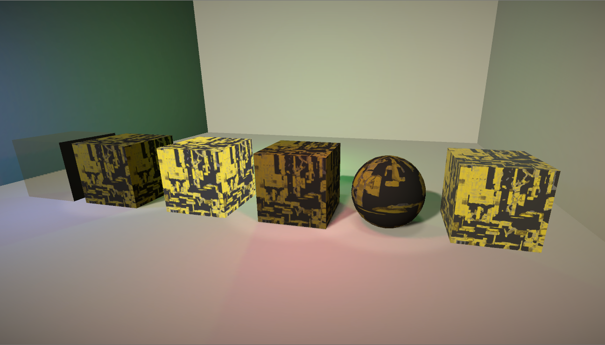

制作物
カテゴリーごと、公開日順に表示しています。Unity - 個人制作物
VRChatワールド「No time.」
公演日: 2019/07/18公開場所: VRChat
開発プラットフォーム: Unity Build-in
概要と所見:
のんびりと人が集まれる場所を目指して製作したVRChatのワールドになります。
このワールドはVR Architecture Award(VRAA) 01というコンテストにも応募した作品であり、選外佳作にも選ばれました。
最初はただのんびりと過ごせるような空間を作る予定でしたが、少し哀しさを取り入れるため、モノクロにしました。
ゲーム制作「Star Fall」
公開日: 2020/03/16公開場所: Github
開発プラットフォーム: Unity Build-in
概要と所見:
ゲーム制作が夢だったので、簡単なゲームを一から作りました。イラストはいらすとやの物を使わせていただいてます。
敵も複数パターン用意したわけではないため、interface等は使わずコードの構造もそこまで複雑にはなっていないと思います。
しかし、初めてゲーム制作をしたためコードを書いていく際の構造等は結構考えて作りました。
特にセーブデータあたりが上手くデータが保存されなくて、実装するのがかなり大変でした。
加えて、背景はシェーダーで動かしています。
ソフト自体はGithubでリリースしていますので、良かったら一度遊んでください。
ゲーム制作「UnitBarrage」
公開日: 2020/10/05公開場所: Github
開発プラットフォーム: Unity URP
概要と所見:
Unityの新しい機能であるECS(EntityComponentSystem)を使用した二作目のゲームです。
今回は、MonoBehavior(UnityC#)だけに頼らずになるべく出来るところは純粋なC#で書くようにしました。
Unityの中でもかなり最新の機能を使用しているため、ネットにもほとんど情報が無い中で制作をしましたが、
数少ない情報を頼りに出来る部分を自分で研究しながらなんとか形にすることが出来たと思っています。
おまけとして、GoogleSpreadSheetをDBとしたオンラインスコアランキングなる機能も実装しました。
初めてのゲームとネットワークの連携昨日の実装でしたが、慣れないJavascirptを勉強しつつ実装しました。
Unity - 共同制作物
VRChatイベント「VirtualCollection Stage.1」
公演日: 2019/03/02開発プラットフォーム: Unity Build-in
概要と所見:
VirtualCollectionとは、VR空間内でファッションショーをするイベントです。
私自身はそのイベントの中の演出を作っていたため、制作物として載せています。
VRChat内では当時C#スクリプトは一切使えず、SDK内にあるトリガーとUnityの機能のみが使用出来ます。
そのため、システムを構築する際、VRChatSDK内のトリガーとUnityのAnimator、そしてシェーダーを組み合わせて演出を作りました。
VRChatイベント「VirtualCollection Stage.2」
公演日: 2019/09/07 and 2019/09/14開発プラットフォーム: Unity Build-in
概要と所見:
先程のstage.1の続きになるイベントになります。
この回でも私は演出を制作しているため、同様に制作物として掲載しています。
この時は大真面目にファッションショーをするというコンセプトであったため、見た目の部分でもリッチさを出しています。
また、A会場とB会場の二種類を製作しており、A会場は夜のような雰囲気、B会場は昼のような雰囲気になっています。
特に力を入れたところは、奥のノイズスクリーンとお客さんの移動、そして二会場の印象分けです。
さらに、stage.2ではAzureを使って数人で会場制作をしました。
A会場
B会場
VRChatイベント「VirtualCollection VRoidStage」
公演日: 2020/04/11開発プラットフォーム: Unity Build-in
概要と所見:
stage.2の続きになるイベントになります。
この回でも私は演出を制作しているため、同様に制作物として掲載しています。
この時は、VRoidと呼ばれるアバターに焦点を当ててファッションショーをしました。
タイトルをナンバリングしていないので、本ステージではなく小さめのステージとしてイベントは開催されました。
そのため、会場のモデルはstage.2のものを使っています。
しかし、配信に移すフレームなどをシェーダーで現地から切り替えれるようにしたり、カメラを会場内から切り替えれるようにしたりと配信映えするようなところには、今回力を加えました。
VRChatイベント「盛夏音祭'20」
公演日: 2020/07/31～2020/08/02開発プラットフォーム: Unity Build-in
概要と所見:
VRChatで行われたかなり大規模の夏フェスイベントになります。
私の制作物としては、演者が出る際の後ろの映像と筒、およびそれの動作ロジックと会場の細かいロジック周りを担当しました。
演者関係の制作物は、シェーダーを一から書いたりアニメーションを組んだりしました。完全自作物のみです。
ロジック周りは、VRChatSDKのトリガーを使用し、Unityの機能をフル活用しながら組んでいます。
加えて、カメラによる映像の無限ループを防止するためのシェーダーを書いたり等の裏方制作もしていました。
このイベントに向けた制作に関しては、とにかく2週間無い中で作り切らなければいけなかったのが非常に大変でしたが、その中でも最高の物を作るために本気で作りました。
ビジュアル的な制作についてはこれが今の私の本気だと思います。
バーチャル学会2020
開催日: 2020/12/12開発プラットフォーム: Unity Build-in
概要と所見:
VRChatで行われた学会になります。イベントの詳しい内容は公式サイトをご覧ください。
私は会場の制作に携わっていました。
特に私の制作物としては、会場の背景となるモデル及びエフェクトの制作をしました。
学会という硬いテーマを持つイベントであったため、あまり背景として主張し過ぎずにシンプルなトーンをイメージして作りました。
シェーダー
シェーダー「空間を移動する写真」
公開日: 2019/02/14開発プラットフォーム: Unity Build-in
概要:
見た目の通り額の外には絵が表示されないという今までの写真立てを少し拡張したようなものです。
シェーダー「現実のLEDディスプレイもどき」
公開日: 2019/05/11開発プラットフォーム: Unity Build-in
概要:
現実のLEDディスプレイで見る干渉縞も含めて再現したものです。

シェーダー「SpongeTunnel」
公開日: 2019/07/10公開場所: NEORT
開発プラットフォーム: NEORT
概要:
メンガースポンジと呼ばれる形状を用いた吸い込まれそうになるレイマーチングになります。
シェーダー「Clock Tunnel」
公開日: 2019/07/18公開場所: NEORT
開発プラットフォーム: NEORT
概要:
VRChat内でライブコーディングバトルをした際に製作したレイマーチングになります。
シェーダー「Mutual World」
公開日: 2019/08/03公開場所: NEORT
開発プラットフォーム: NEORT
概要:
中心の物体の座標情報を背景の色合いに使用したりと手前と奥で情報を取り合う形となっているレイマーチングになります。
シェーダー「URPコーディング」
公開日: 2019/10/03開発プラットフォーム: URPUnity
概要:
コーディングのみでURPに対応するPBRシェーダーを製作しました。

シェーダー「Darkness module」
公開日: 2019/12/12公開場所: NEORT
開発プラットフォーム: NEORT
概要:
手前にあるCubeとSphereを通すと背景がはっきりと見えるといったスポットライト的表現をしたレイマーチングになります。
シェーダー「6 Side Raymaarching and Photoframe」
公開日: 2019/12/16公開場所: VRChat
開発プラットフォーム: VRchat
概要:
6面全てに異なるレイマーチングが映っているものと昔に作成した「空間を移動する写真」を改良して影を落とすようにしたものです。
両方ともVRChat内で行われたシェーダー展示会「ShaderFes2019」に出店しました。
インターン
clusterインターン作品 その1
公開日: 2019/06/01開発プラットフォーム: cluster
概要と所見:
クラスター株式会社でインターンした際の成果の一つで、波紋をシェーダーで表現しました。
テクスチャは使用しておらず、シェーダーのみで実装しました。
波紋を重ねるという表現を作るのがかなり難しかったですが、幾度となく和で処理することでなんとか表現することが出来ました。
（画像は同インターンメンバーmikopom氏のツイートより）


clusterインターン作品 その2
公開日: 2019年8月頃開発プラットフォーム: cluster
概要と所見:
クラスターのインターンでのまた別の制作物です。
壁の部分が音に合わせて変化する仕組みを作りました。（ライトとビームは別の方が作っています。）
これが一番トップに掲載していた「音解析」の際の礎になっています。
音を拾うという実装はかなり簡単でしたが、そこから周波数で分けたり等が大変でした。
また、ただ音を拾って実装しただけだと見た目が寂しくなってしまったため、迫力を音から計算して壁の色や速度に実装しています。
（Music by Shadow -Bustre-）